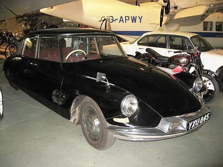

In 1925, Houdina Radio Control demonstrated the radio-controlled "American Wonder" on New York City streets, traveling up Broadway and down Fifth Avenue through the thick of the traffic jam.
The American Wonder was a 1926 Chandler that was equipped with a transmitting antennae on the tonneau and was operated by a second car that followed it and sent out radio impulses which were caught by the transmitting antennae.
In 1953 the RCA Labs built a car which was guided by wires, which were laid in patterns at the laboratory.
In 1957 a successful demonstration of this car took place on Nebraska Highway 2.
In 1960 the Ohio State University started a project to develop driverless cars which were actived by electronic devices imbedded in the roadway.
During the 1960s the United Kingdom tested a driverless Citroen DS which interacted with magnetic cabels being embedded in the road.
It went through a test track at 80 miles per hour without deviation of speed or direction under any weather conditions, and in a far more effective way than by human control.
